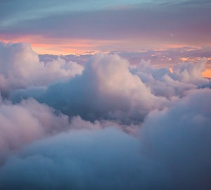

Como as nuvens se formam?
Nuvem é um conjunto visível de partículas minúsculas de água líquida ou de gelo, ou de ambas ao mesmo tempo, em suspensão na atmosfera. Este conjunto pode também conter partículas de água líquida ou de gelo em maiores dimensões, e partículas procedentes, por exemplo, de vapores industriais, de fumaças ou de poeiras.
As nuvens são formadas pelo resfriamento do ar até a condensação da água, devido à subida e expansão do ar. É o que sucede quando uma parcela de ar sobe para níveis onde a pressão atmosférica é cada vez menor e o volume de ar se expande. Esta expansão requer energia que é absorvida do calor da parcela, e, por isso, a temperatura desce. Este fenômeno é conhecido por resfriamento adiabático. A condensação e congelamento ocorrem em torno de núcleos apropriados, processos que resultam ao resfriamento adiabático, o qual, em troca, resulta de ar ascendente.
Uma vez formada a nuvem poderá evoluir, crescendo cada vez mais, ou se dissipar. A dissipação da nuvem resulta da evaporação, das gotículas de água que a compõem motivada por um aumento de temperatura decorrente da mistura do ar com outra massa de ar mais aquecida, pelo aquecimento adiabático ou, ainda, pela mistura com uma massa de ar seco. Uma nuvem pode surgir quando a massa de ar é forçada a deslocar-se para cima acompanhado o relevo do terreno. Essas nuvens, ditas de "origem orográfica" também decorrem da condensação do vapor de água devido ao resfriamento adiabático do ar.